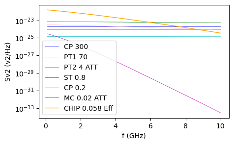
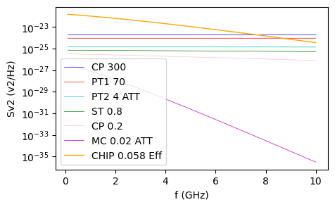

2. 等效噪声温度¶
下面计算 MC 层的等价温度：即，将芯片接收的总噪声（ST层的噪声约为总噪声的一半，这里计算总噪声而非ST），等价于全部来自于从 MC 层，计算出此噪声强度下 MC 的温度。
sv2_total： 1.103113173769864e-23
等效 MC 噪声温度： 0.7876608417849421
等效 芯片 噪声温度： 0.058356957091375165
光子数密度： 0.01664807568887365
也就是说，XY 通道上的噪声的光子数密度从 1249 （300K 产生的）经过 50dB 衰减之后，降低到了 0.016 （各温度层的总和）量级。
总的噪声谱密度等效于 MC 层处于 787mK 传导下来的噪声，或等效于将芯片直接置于 58mK 的环境下。

橙色线就是转换后，芯片的噪声谱密度曲线，由于温度提高，对频率的敏感性减弱。
当把所有的衰减器都放在 MC 层
sv2_total1： 3.229075931689739e-24
等效 芯片 噪声温度： 0.04503077872097213
光子数密度： 0.004873289685424986

可以看到，总的噪声谱密度下降到 1/3，芯片等效温度下降到 45mK ，光子数密度下降到 1/3，抑制效果最佳，但是需要考虑衰减器的热负荷与 MC 层的冷量。